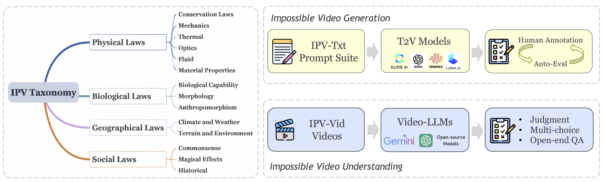

This project aims to advance video research by answering the follow important questions:
• Are today's video understanding models good enough for understanding impossible videos?
• Can today's video generation models effectively follow prompts to generate impossible video content?
To this end, we introduce IPV-Bench, a novel benchmark designed to evaluate and foster progress in video understanding and generation.

- §IPV Taxonomy: IPV-Bench is underpinned by a comprehensive taxonomy, encompassing 4 domains, 14 categories. It features diverse scenes that defy physical, biological, geographical, or social laws.
- §IPV-Txt Prompt Suite: A prompt suite is constructed based on the taxonomy to evaluate video generation models, challenging their prompt following and creativity capabilities.
- §IPV-Vid Videos: A video benchmark is curated to assess Video-LLMs on their ability of understanding impossible videos, which particularly requires reasoning on temporal dynamics and world knowledge.
Comprehensive evaluations reveal limitations and insights for future directions of video models, paving the way for next-generation video models.